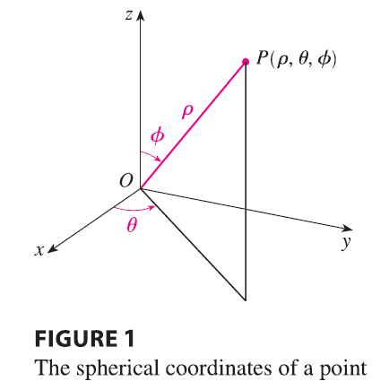
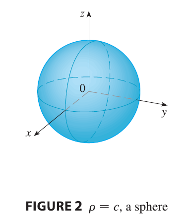
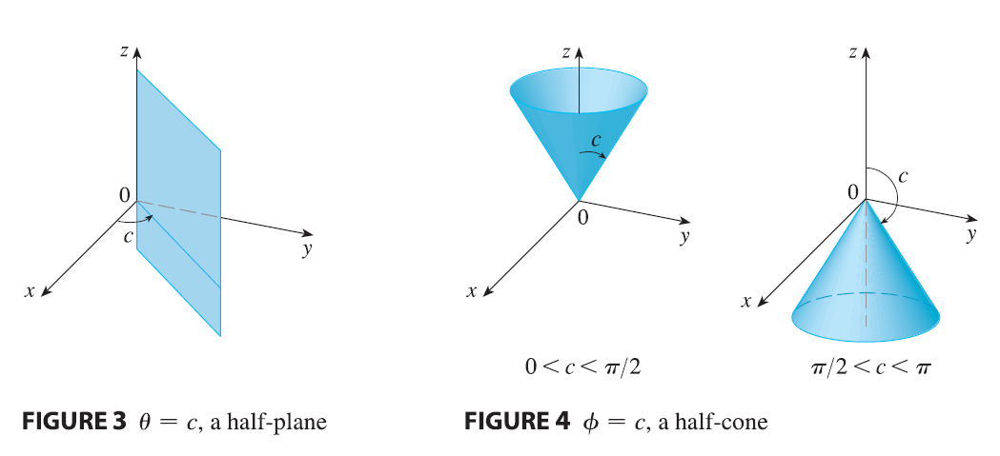

Another useful coordinate system in three dimensions is the spherical coordinate system. It simplifies the evaluation of triple integrals over regions bounded by spheres or cones.

The spherical coordinates \((\rho, \theta, \phi)\) of a point P in space are shown in Figure 1, where \(\rho = |OP|\) is the distance from the origin to P, \(\theta\) is the same angle as in cylindrical coordinates, and \(\phi\) is the angle between the positive z-axis and the line segment OP. Note that \[ \rho \ge 0 \qquad 0 \le \phi \le \pi \]
The spherical coordinate system is especially useful in problems where there is symmetry about a point, and the origin is placed at this point. For example, the sphere with center the origin and radius c has the simple equation \(\rho = c\) (see Figure 2); this is the reason for the name “spherical” coordinates.

The graph of the equation \(\theta = c\) is a vertical half-plane (see Figure 3), and the equation \(\phi = c\) represents a half-cone with the z-axis as its axis (see Figure 4).
